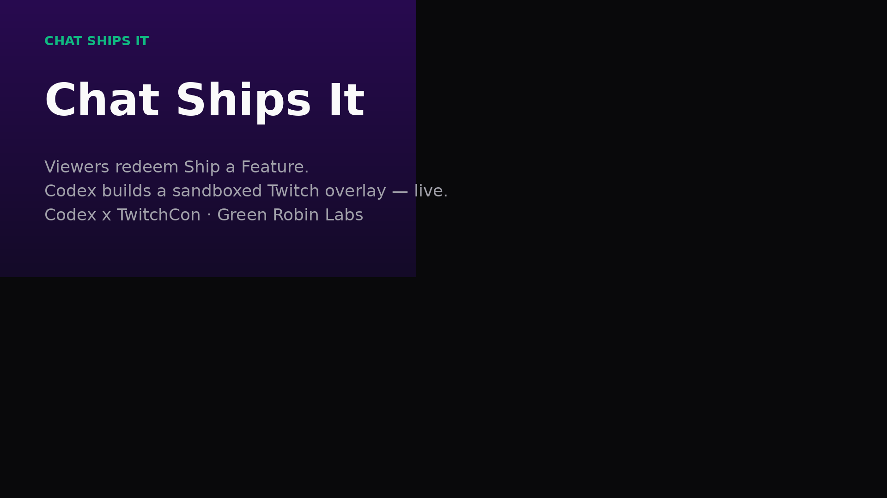

CODEX × TWITCHCON
Chat Ships It
Viewers redeem Ship a Feature. Codex builds a sandboxed Twitch overlay widget — live on stream.
Chat Ships It · Green Robin Labs
Demo walkthrough
Open the live demo · chat-ships-it.vercel.app
Screen recording
Redeem · !ship · Codex builds · LUL quack
Screen recording
Ship confetti · fire a raid · sandbox-safe
Screen recording
Dashboard · OBS overlay /overlay/northbridge
Screen recording
CHAT SHIPS IT
Try the demo.
Codex × TwitchCon · Green Robin Labs
chat-ships-it.vercel.app
github.com/dl88jing/chat-ships-it
Feature by chat · Built with Codex